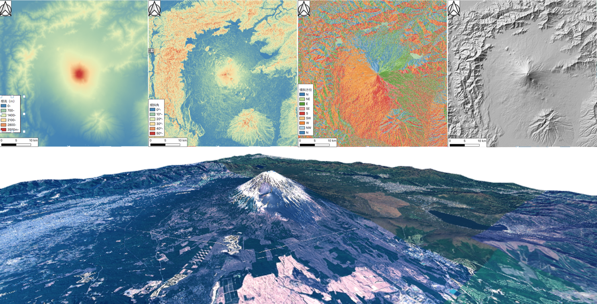

課題：ラスタデータの分析
この実習では、ラスタデータを用いた地形情報の可視化や分析を行います。ラスターデータはベクトルデータと異なり、ピクセルごとに入力された値が分析に用いられます。実習で使われる用語や概念は、地理情報科学教育用スライド（GIScスライド）の4章を参照してください。手順とGISオープン教材のラスタデータの分析の教材を参考に、完成例のような地図が作成できれば、完了となります。
実習用データ
本実習をはじめる前に、Fuji_taskをダウンロードしてください。
課題②_数値標高モデルの視覚的分析
富士山周辺のDEMデータを用いて、標高区分図、傾斜区分図、傾斜方位図、陰影図、3D地図を作成し、レイアウトしてください。また、富士山の地形の特徴を整理し、300字程度でまとめてください。
完成例
 ※ 上段：左から、標高区分図（段彩図）、傾斜区分図、傾斜方位図、陰影図 下段：3D地図（背景地図として地理院タイルを使用）
手順
- ダウンロードしたラスターデータをQGISで読み、空間データの統合・修正の教材を参考にラスタデータを結合する。
- ラスタ＞解析から傾斜、傾斜方位、陰影図を作成する。
- 標高値、傾斜角、斜面方位（0°-360°）など、それぞれのラスターデータの値に応じて色分けを行い、標高区分図、傾斜区分図、傾斜方位図を作成する。
- 3D地図を作成する。
- 作成した標高区分図、傾斜区分図、傾斜方位図、陰影図、3D地図をパワーポイントなどで完成例のようにまとめる
- 地図を視覚的に分析し、富士山の地形的な特徴をまとめる。
実習用データのソース
実習用データは、無償で利用可能なデータを加工して作成したものです。データのソースは、各ファイルのREADME.mdにまとめています。